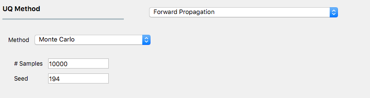
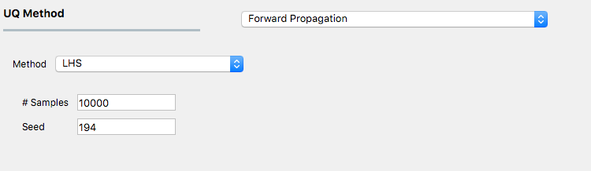
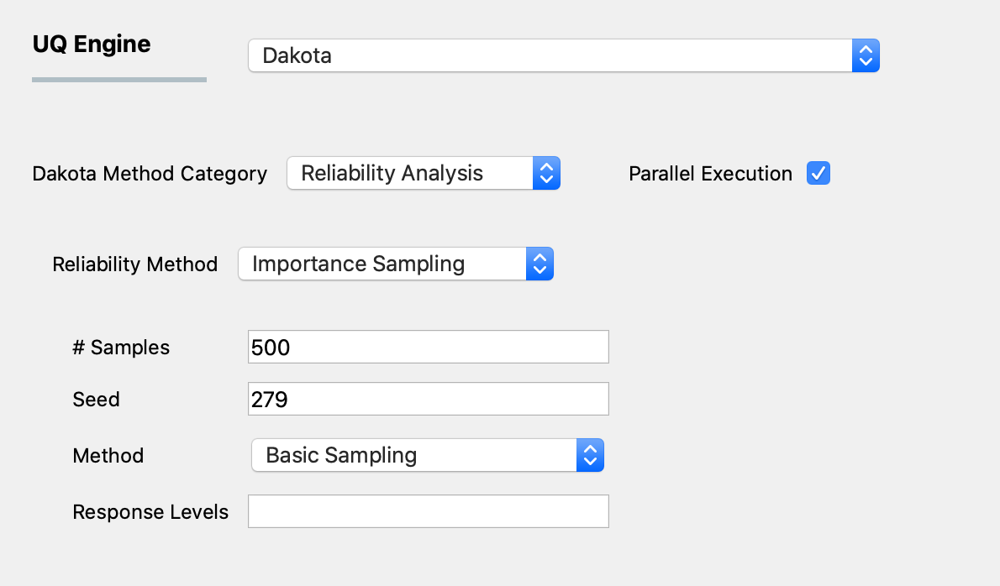
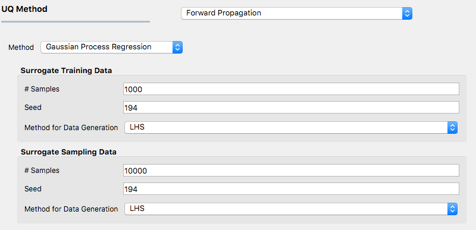
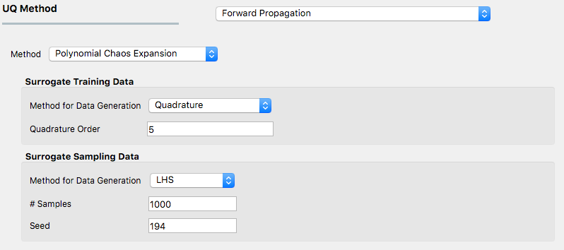

Forward Propagation
The forward propagation analysis provides a probabilistic understanding of output variables by producing sample realizations and statistical moments (mean, standard deviation, skewness, and kurtosis). Currently, five sampling methods are available: Monte Carlo Sampling (MCS), Latin Hypercube Sampling (LHS), Importance Sampling (IS), and sampling based on surrogate models, including Gaussian Process Regression (GPR) and Polynomial Chaos Expansion (PCE). Depending on the option selected, the user must specify the appropriate input parameters. For instance, for MCS, the number of samples specifies the number of simulations to be performed. Providing a random seed allows the user to reproduce the sampling results multiple times. The user selects the sampling method from the dropdown Methods menu. Additional information regarding sampling techniques offered in Dakota can be found here.
Monte Carlo Sampling (MCS)
MCS is among the most robust and universally applicable sampling methods. Moreover, the convergence rate of MCS methods is independent of the problem dimensionality, albeit the convergence rate of such MCS methods is relatively slow at \(N^{-1/2}\). In MCS, a sample drawn at any step is independent of all previous samples.
figMCS shows the input panel corresponding to the Monte Carlo Sampling setting. Two input parameters need to be specified: the number of samples to be executed and the random seed.

Monte Carlo Sampling input panel.
Latin Hypercube Sampling (LHS)
Latin hypercube sampling (LHS) is a pseudo-random, stratified sampling approach. LHS evenly spreads out the samples to cover the whole range of the input domain to achieve a better convergence. Each sample from LHS effectively represents each of N equal probability intervals of a cumulative density function.
figLHS shows the input panel corresponding to the Latin hypercube sampling (LHS) scheme. Two input parameters need to be specified: the number of samples to be executed and the random seed.

Latin Hypercube Sampling input panel.
Importance Sampling (IS)
For problems where one is interested in rare events rather than the whole distribution of output, such as earthquake or storm surge events, conventional sampling methods may require a considerable number of simulations to obtain an accurate estimation of tail distribution. For such problems, importance sampling (IS) bypasses conventional sampling methods (MCS or LHS). An alternative sampling distribution is introduced around the tail part of the original distribution so that the generated samples have a better resolution at the domain of interest.
figIS shows the input panel for IS scheme. Like MCS and LHS, IS requires both the number of samples to be executed and the corresponding seed for generating such random samples. In addition, IS algorithm can be performed via three different approaches, as specified by the third input method:
Basic Sampling: A sampling density is constructed in the failure region based on an initial LHS sampling, followed by generation of importance samples and weights and evaluation of the Cumulative Distribution Function.
Adaptive Sampling: The basic sampling procedure is repeated iteratively until a convergence in failure probability is achieved.
Multimodal Adaptive Sampling: A multimodal sampling density is constructed based on samples in the failure. The adaptive sampling procedure is used.

Importance Sampling input panel.
For more information on each, please refer to the Dakota manual.
Gaussian Process Regression (GPR)
For the problems in which computationally expensive models are involved, conventional sampling schemes such as LHS and MCS can be highly time-consuming. A surrogate model can be constructed based on a fewer number of simulation runs in such a case. Then the surrogate model can be used to efficiently generate the required number of samples replacing the expensive simulations.
Gaussian Process Regression (GPR), also known as Kriging, is a well-established surrogate technique that constructs an approximated response surface based on Gaussian process modeling and covariance matrix optimizations. figGPR shows the input panel for the GPR model that consists of training and sampling panels.

GPR forward propagation input panel.
Polynomial Chaos Expansion (PCE)
Response surface can be approximated using Polynomial Chaos Expansion (PCE) model as well. Like the input GPR panel, the input panel for the PCE model shown in figPCE consists of training and sampling parts. The input parameters in the surrogate training data set specify the dataset used for training the surrogate model. In contrast, the surrogate sampling data parameters are related to the samples generated using the surrogate. Extreme care must be taken to specify the training dataset’s parameters to accurately respond to surface approximation.

PCE forward propagation input panel.
Suppose the user is not familiar with the training parameters of the surrogates. In that case, it is recommended to refrain from using the surrogates (PCE in particular) and instead use conventional sampling such as MCS and LHS, even at a higher computational cost.